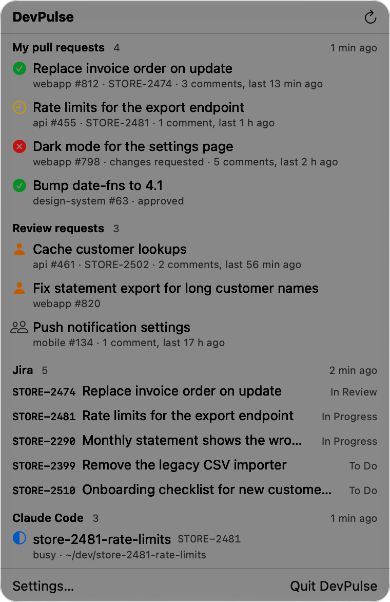
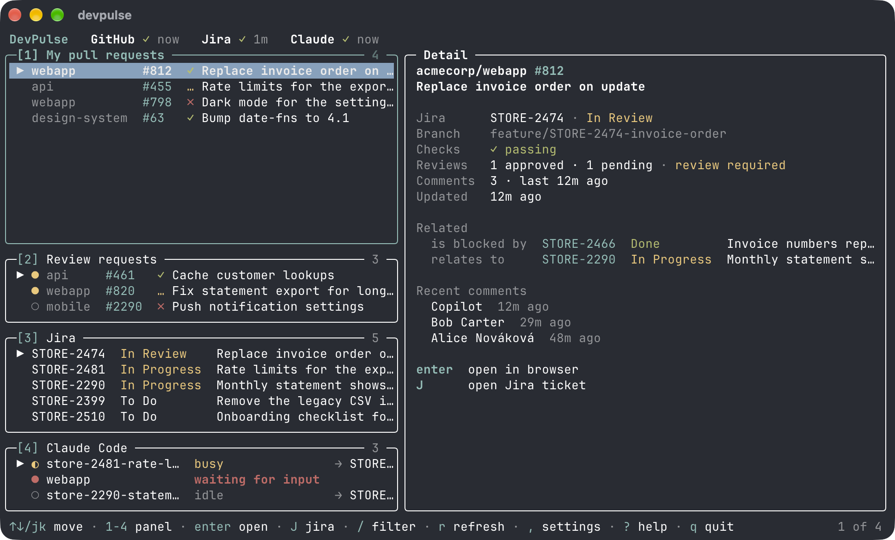
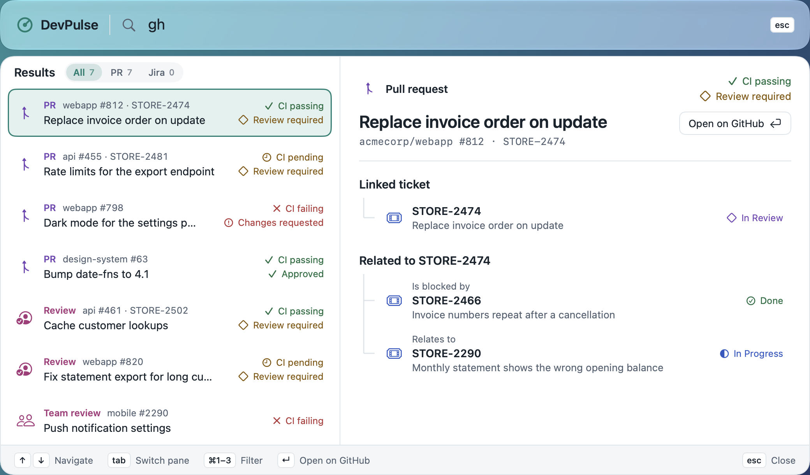
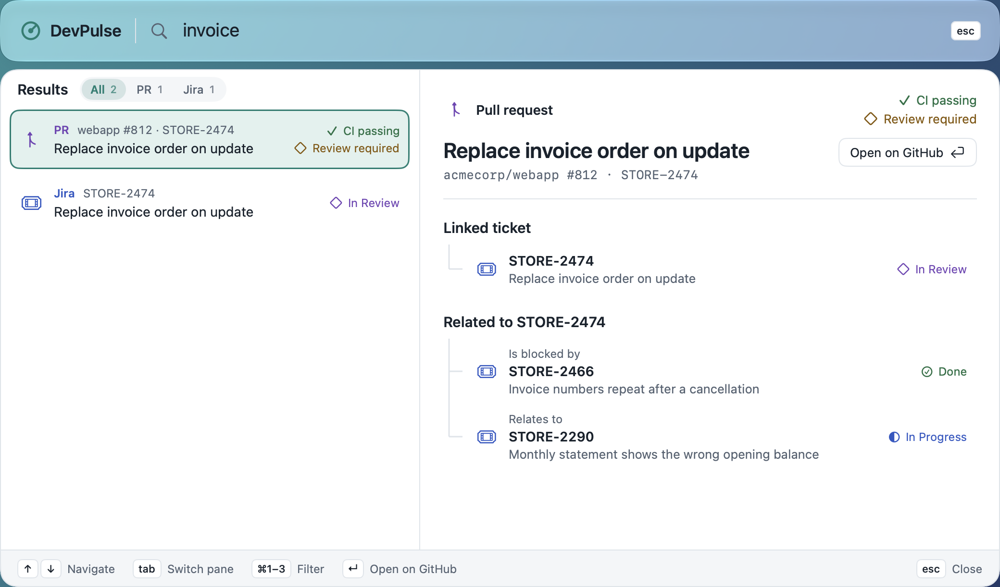
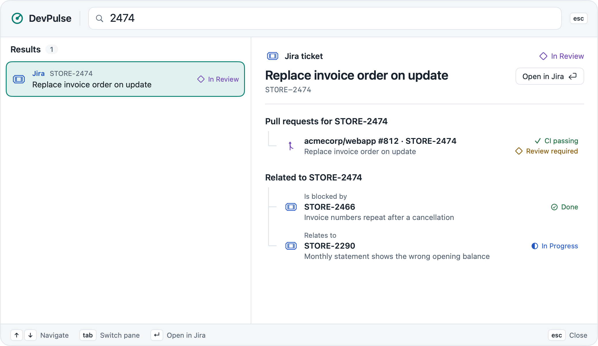

Getting started
DevPulse keeps your GitHub pull requests, your Jira tickets and your running Claude Code sessions in one place: a popover in the menu bar and a live dashboard in the terminal. It needs macOS 27 or later.
- Download the disk image from the download page and open it.
- Drag DevPulse to Applications and start it from there.
DevPulse lives in the menu bar and has no Dock icon. The first time it runs from the Applications folder it does two things:
- It turns on Launch at login, so it is there after every restart. You can turn that off in General settings.
- It asks Install the command line tool?
Choose Install to get the
devpulsecommand, or Not Now; see the next section.
macOS also asks whether DevPulse may send notifications. Allow it if you want them; Notifications lists what DevPulse can tell you.
Command line tool
The terminal dashboard and devpulse upgrade are run by
the devpulse command. It ships inside the app; to type it
in a terminal, put it on your PATH:
- Open Settings… › General.
- Next to Command line tool, click Install and enter your password when macOS asks.
This creates the link /usr/local/bin/devpulse to the
tool inside the app (and the folder, if it is missing). Because it is
a link, every update of the app also updates the command. Afterwards
the line reads Installed at /usr/local/bin/devpulse.
If something else already sits at that path, or the link points to a
copy of DevPulse that is gone, the line names the target and offers
Replace.
The button is disabled while DevPulse runs from anywhere other than /Applications or ~/Applications, for example straight from the disk image or from Downloads. The message says why: Move DevPulse to the Applications folder first — the command line tool would otherwise point at a location that can disappear. Move the app, start it again and install. A copy without the tool inside says The command line tool is missing from this copy of DevPulse.; download the app again.
devpulse --version prints the version of the command.
Connecting GitHub
DevPulse uses the login of the GitHub command line tool, so there is no token to paste. In a terminal:
brew install gh
gh auth loginDevPulse asks gh for the token once, when it starts,
and keeps it in memory only; it asks again only when GitHub rejects the
token. The Settings… › GitHub tab
has these controls:
 1
2
3
1
2
3
gh is signed in.- 1Status
- Signed in as … with your login when the last fetch worked; otherwise the problem, such as Not logged in — run “gh auth login” or GitHub CLI (gh) not found — install it with Homebrew.
- Check Again
- Shown while GitHub is not connected. After
gh auth login, click it to fetch right away. - 2Include team review requests
- Off by default. When on, Review requests also lists pull requests that ask one of your teams for a review, not only you.
- 3Repositories
- The repositories (
owner/name, separated by commas) in which the quick launcher looks up a bare number andgh <number>; forgh <number>, the first one's row stays even when the pull request does not exist. A pasted GitHub address works too. Up to ten. Empty means the repositories of your pull requests, most pull requests first; the field shows them in grey.
Connecting Jira
DevPulse reads your open Jira Cloud tickets with an API token.
 1
2
3
4
5
6
1
2
3
4
5
6
- Create a token at id.atlassian.com › Security › API tokens (the 2Create an API token at id.atlassian.com link in Settings opens the same page) and copy it.
- Open Settings… › Jira.
- 1Fill in Site (for example
acme.atlassian.net), E-mail (your Atlassian account) and API token. DevPulse always talks to the site over HTTPS, also when you typehttp://. - 3Click Test Connection. It answers Connected — 5 open tickets or says what went wrong, for example Jira credentials rejected.
- 4Click Save.
The token is stored in your login Keychain, never in the settings file. Once saved, the token field reads Saved in Keychain — leave empty to keep: leave it empty to keep the token when you change the site or e-mail, or paste a new one to replace it.
- 5Projects
- The project keys, separated by commas (
STORE, WA), in which the quick launcher looks up a bare number andjira <number>; forjira <number>, the first one's row stays even when the ticket does not exist. Up to ten. Empty means the projects of your tickets, most tickets first; the field shows them in grey. - 6Show tickets I created · In status
- Tickets you reported that are in one of these statuses, whoever works on them:
for example those waiting for you to review or accept them. They get their own section
in the popover and panel 5 in the
terminal dashboard. Type the status names as Jira shows them,
separated by commas (
In Review, QA), up to ten; they apply when you press Return or leave the field. On by default withIn Review. A status Jira does not know makes it refuse the search: the section then says Jira refused the search; check the statuses in Settings › Jira and keeps the tickets it had.
DevPulse lists the tickets assigned to you that are not done.
The menu bar
The DevPulse icon is a sonar dial: a ring with a dot and a short line. Click it to open the popover. Every row says what it is on the left, with an icon and a coloured label (PR violet, Review magenta, Jira blue, Claude cyan), and its state on the right, as a shape and a word. The launcher uses the same marks.

1 2 3 4 5 6 7 8 9- 1Refresh
- Fetches GitHub and Jira now. A spinner shows while a fetch runs. DevPulse also fetches by itself, every 2 minutes by default.
- 2Source state
- When the section's data was fetched (1 min ago), or what went wrong, with the age of the data still shown (Offline · data from 20 min ago). An empty Jira section that is not set up shows Set up in Settings…, which opens the Jira tab.
- 3Pull request
- Your own pull request: a branch icon and PR. Below the title: the repository and number and the linked Jira key. On the right, the CI state (CI passing, CI failing, CI pending) and, separately, the review state (Approved, Changes requested, Review required). Hover over it to see the comments. Click it to open the pull request on GitHub.
- 4Review request
- A person with a check and Review: the review was requested from you. Two people and Team review: from one of your teams (only with Include team review requests). On the right, its CI and review state. Click it to open the pull request.
- 5Jira ticket
- A ticket icon and Jira, the summary, the key below it, and the status on the right: an empty circle for to do, a half circle for in progress, a diamond for in review, a check for done. Click it to open the ticket in Jira.
- 6Created by me
- The tickets you reported that are in one of the statuses set in Settings › Jira, whoever works on them; the heading names the statuses (Created by me · In Review). Rows as in Jira; click one to open the ticket. When its search fails, the heading says why and the tickets from before stay. The section is not there while Show tickets I created is off or Jira is not set up.
- 7Claude Code session
- A terminal icon and Claude, the folder's name, and below it the Jira key found in the folder name and what the session waits for. On the right: Working, Waiting for input or Idle; a session waiting for you also has an amber bar and background. Click it to bring the session's Ghostty window to the front; when the window has tabs, DevPulse switches to the session's tab. The first time, macOS asks whether DevPulse may control Ghostty; without that permission DevPulse only activates Ghostty.
- 8Settings…
- Opens the Settings window.
- 9Quit DevPulse
- Quits the app. Notifications, the launcher and the terminal dashboard stop until it runs again.
A Jira key in a pull request's title or branch name links it to that
ticket; a Jira key in a Claude Code session's folder name does the same
for the session. Names such as UTF-8 or SHA-256
do not count as keys, and when there are several keys, one of a project
you have tickets in (or of one of your projects)
wins. Hover over a row to see its full title or folder.
DevPulse shows the interactive sessions of the native
claude command, the one Claude Code's own installer puts
in place. A Claude Code installed with npm runs as a Node.js process
and is not detected; neither are non-interactive runs, such as the
SDK's.
The terminal dashboard
Type devpulse in a terminal for the same data as a
live, keyboard-driven dashboard in the style of lazygit. It updates by
itself the moment the app has news, so you can keep it open all day.
If the app is not running, devpulse starts it.

1 2 3 4 5 6 7 8 9 10devpulse in Ghostty. The colours follow your
terminal's theme.- 1My pull requests
- Repository, number, CI state (✓ passed, ✗ failed, … running) and title.
- 2Review requests
- Pull requests waiting for your review: ● when the review was requested from you, a dim ○ when from one of your teams.
- 3Jira
- Your open tickets: key, status and summary.
- 4Claude Code
- Running sessions: ◐ busy, ● waiting for input, ○ idle, with → and the linked Jira key.
- 5Created by me
- The tickets you reported in the statuses set in Settings › Jira: key, status and summary. The panel is there only while Show tickets I created is on; when its search fails, the header says created ✗ and why.
- 6Detail
- Everything about the selected item. For a pull request: the linked ticket and its status (also when the ticket is not assigned to you), branch, checks, reviews, comments, whether the review was requested from you or your team, the last update, the ticket's related tickets and the three most recent comments. For a ticket: status, priority, comments, the pull requests and sessions linked to it, and its related tickets. For a session: state (and what it waits for), folder, Jira key and process ID. The bottom lines name the keys that apply.
- 7Sources
- Each source with its state and age: ✓ 2m when fine, ✗ and the error with the age of the data shown, fetching, off or not set up.
- 8Key bar
- The keys you can press now; when the window is narrow, the less important ones are left out.
- 9Position
- The selected row and the length of the focused list.
- 10Related
- The Jira links of the ticket, here of the pull request's ticket; see Related tickets below.
Keys
| Key | Action |
|---|---|
| ↑ ↓ or j k | Move the selection. |
| 1–5, Tab, Shift-Tab | Switch panel; 5 only while the panel of tickets you created is there. |
| Enter | Open: the browser for a pull request or ticket, the Ghostty window for a session. |
| J | Open the Jira ticket linked to the selected pull request or Claude Code session. |
| / | Filter. Enter keeps the filter, Esc clears it. |
| r | Refresh GitHub and Jira now; the key bar shows refreshing… until the new data arrives. |
| , | Open Settings in the app. |
| ? | Show all keys; Esc, ?, q or a click closes the list. |
| q, Ctrl-C | Quit. |
| Mouse | A click selects a row (and its panel); the wheel moves through the panel under the pointer. |
| Click, ⌘-click | Open the underlined link under the pointer in the detail in the browser (see Links). |
Filter. Press / and type: all panels show only the rows that contain the text. It matches a pull request's title, repository, branch, Jira key and number, a ticket's key, summary and status, and a session's name, folder and Jira key. Each panel's count shows how many rows match, for example 2/4. Enter keeps the filter and returns to the lists; Esc clears it.
Related tickets. When a ticket has links in Jira, the detail shows a Related section with one row per link: how it relates in Jira's words (blocks, is blocked by, relates to), the key, the status in its colour and the summary. A pull request shows the related tickets of its own ticket, even when that ticket is not assigned to you. Without links there is no section.
Links. Links in the detail are underlined. Click the Jira key, the branch, the pull request's title or a row under Related to open it in the browser: the ticket in Jira, the branch on GitHub (in the fork, for a pull request from a fork) or the pull request. The same works for a ticket's key and summary and a session's Jira key. ⌘-click works too. Terminals with hyperlinks, such as Ghostty, also open a link themselves with ⇧⌘-click; that is the terminal's own fallback and needs no help from DevPulse.
States and messages
- disconnected — reconnecting… in red at the top: the app quit or restarted. The dashboard keeps the last data and reconnects by itself as soon as the app is back.
- not connected — action not sent in the key bar: a key that needs the app was pressed while it was away.
- could not open link in the key bar: a click on a link could not start the browser.
- refreshing… in the key bar: you pressed r. It goes when the new data arrives, after 10 seconds at the latest, or with the next key.
- An empty panel says why: Jira is not set up — press , for Settings, GitHub unavailable — see the header, or no match for “…” while filtering.
- While
devpulse upgraderuns in another terminal, the top right shows its progress, for example downloading update 42%. The result, up to date or update failed: …, stays for about 10 seconds.
The quick launcher
Press ⌥Space anywhere to open a search panel
in the middle of the screen. Type a number or words from a title to find them everywhere,
gh for pull requests or jira for tickets; the
shortcut can be changed in
General settings. The results are on the left,
and on the right is the detail of the selected one.

1 2 3 4gh.- 1Search field
- Next to the DevPulse mark. Type a query from the table below. Until you do, the panel is just this bar, like Spotlight, with the hint Number, words, gh … or jira … in light grey. The bar is Liquid Glass, like Spotlight's; the results sit on a card below it.
- 2Results
- Up to 20 rows. As in the popover, a row says what it is with its icon and coloured label (PR, Review, Jira, Claude) and the repository and number or the ticket key, shows the name below, and its state on the right. The selected row is filled, and framed while the keyboard is in the results. The list does not move under you: what DevPulse finds in Jira and on GitHub after you stop typing is added at the bottom, and Searching Jira and GitHub… shows there meanwhile. A ticket that was moved to another project shows its new key and Moved from the key you looked for. When Jira or GitHub cannot be reached, the rows say so. Next to Results, All, PR and Jira show how many rows of each kind there are; click one, or press ⌘1 to ⌘3, to see only pull requests and review requests, or only tickets. Claude Code sessions show under All. The filter stays while you type another query, and the selected row stays selected when the filter keeps it.
- 3Detail
- At the top: what the selected result is (Jira ticket, Pull request, Review request, Claude Code session), its state, its name and identifier, and a button that opens it (Open in Jira, Open on GitHub, Open in Ghostty). Below, joined by a thin line: for a ticket, Pull requests for it (yours and your review requests linked to it, and those GitHub finds with the ticket's key in the title or description in your repositories), then Related to it, with how each ticket relates (Is blocked by, Relates to …) and its status. For a pull request or a Claude Code session: its Linked ticket, then that ticket's related tickets. Loading… shows while Jira or GitHub answers.
- 4Keys
- The keys that work now. ↵ says where Enter goes for the selected row, and esc says Back while you are in the detail.

store-2290-statement, whose ticket shows on the right.
invoice finds the pull request and the ticket with it in the title.| Type | Result |
|---|---|
invoice order | Words from a title, in any case and with or without accents: first your pull requests and review requests, your tickets and your pull requests' tickets, and the Claude Code sessions that have every word in their title, key, repository or folder. Then, once you stop typing, the tickets of your projects with every word in the summary and the pull requests of your repositories with every word in the title, as Jira and GitHub find them (Jira or GitHub could not be searched when they do not answer). From two characters. |
2474 | Everything with that number: your pull requests and review requests numbered 2474 in any repository, then your tickets and your pull requests' tickets numbered 2474 in any project (STORE-2474, WA-2474), then the Claude Code sessions whose Jira key or folder name has that number (store-2474-fix, but not store-24740). Then pull request 2474 of each of your repositories and ticket 2474 of each of your projects, as soon as GitHub and Jira confirm that they exist. |
gh | Your pull requests, then your review requests. |
gh invoice | Those whose title or repository contains the text. |
gh 812 | Your pull requests and review requests with that number, then pull request 812 of your first repository right away (Not found on GitHub when it does not exist) and of the others once GitHub finds them. |
gh webapp 455 | Pull request 455 in that repository: the name of one of your repositories or of a repository you have pull requests in, or a full owner/name. |
jira | Your tickets. |
jira export | Those whose summary or key contains the text. |
jira STORE-2290 | That ticket, even when it is not in your list, with its summary and status, or Not found in Jira. |
jira 2290 | Ticket 2290 of your first project right away (Not found in Jira when it does not exist), and of the other projects once Jira finds them. |
| Key | Action |
|---|---|
| ↑ ↓ or the mouse | Move the selection in the results, or in the detail after Tab. |
| Tab or →, Shift-Tab or ← | Move into the detail and back to the results. When the detail has no rows, → and ← move the cursor in the search field as usual. |
| Enter or a click | Open the selected row: a pull request or ticket in the browser; for a Claude Code session, bring its Ghostty window and tab to the front. |
| ⌘Enter | Open the Jira ticket linked to the selected pull request. |
| ⌘1 ⌘2 ⌘3 | Show all results, only pull requests, or only Jira tickets. |
| Esc | Back from the detail to the results; in the results, close the launcher. |

Notifications
DevPulse posts a macOS notification when something new happens. Clicking it opens the pull request or ticket, or brings the Claude Code session's Ghostty window to the front. Choose what you get in Settings… › Notifications.
 1
2
1
2
1Each source has a master switch in its section heading (GitHub, Jira, Claude Code), on by default. Turning one off stops its notifications only; the data stays in the popover and the dashboard. 2Below it, every kind of notification has its own switch; these are greyed out while their source's master switch is off:
| Switch | Default | Notification |
|---|---|---|
| GitHub | ||
| Review requested from you | on | Review requested |
| Review requested from one of your teams | off | Review requested |
| New comment or review by a person | on | New comment on #812 |
| New comment or review by Copilot | on | New comment on #812 |
| New comment by another bot (CI, Sonar, Dependabot…) | off | New comment on #812 |
| CI finished (passed, failed or errored) | on | CI passed on #812, CI failed on #812, CI error on #812 |
| Jira | ||
| New comment by a person | on | New comment on STORE-2290 |
| New comment by Jira automation or an app | off | New comment on STORE-2290 |
| A ticket you created reached a watched status | on | STORE-2455 is In Review |
| Claude Code | ||
| A session is waiting for your input | on | Claude is waiting |
| A session finished its work | on | Claude finished |
- The comment switches cover comments and reviews on your own pull requests and tickets. Your own comments never notify.
- Review requested from one of your teams works only with Include team review requests on in the GitHub tab.
- CI finished notifies once per pushed commit and result.
- A Claude Code session notifies once when it starts waiting, and once when it goes from working to idle.
- Right after installing, or after a source is turned back on, DevPulse only notes what is already there; you are not flooded with old items. What you were told about is remembered across restarts.
If notifications are turned off for DevPulse in macOS, the tab says Notifications are turned off for DevPulse in System Settings.; Open System Settings takes you there.
General settings
Settings… › General:
 1
2
3
4
5
1
2
3
4
5
- 1Refresh GitHub and Jira every
- 1 to 30 minutes, 2 by default; use the arrows. Fetching pauses while the Mac sleeps or the screen is locked and runs once right after it wakes or unlocks. Claude Code sessions are not fetched on a timer: DevPulse sees their changes as they happen.
- 2Launch at login
- Starts DevPulse when you log in; on by default. If macOS wants your approval, a line points to System Settings › General › Login Items.
- 3Appearance
- System (the default) follows the Mac's light or dark appearance; Light and Dark keep DevPulse's popover, launcher and windows in that one.
- 4Quick launcher shortcut
- Shows the current shortcut, ⌥Space by default. Click it, then press the new shortcut, or Esc to cancel. A shortcut without ⌘, ⌥ or ⌃ is refused (Use at least one of ⌘, ⌥ or ⌃), and so are ⌘Space and ⌥⌘Space, which belong to Spotlight; the recorder then waits for another shortcut. If another app already uses it, a red line says so; pick a different one.
- 5Command line tool
- Install, Replace or the installed path; see Command line tool.
The GitHub, Jira, Notifications and Updates tabs are described in Connecting GitHub, Connecting Jira, Notifications and Updates.
Updates
At every launch DevPulse asks whether a newer version exists and, if so, offers it in a dialog with the release notes; nothing is installed without your OK. Settings… › Updates has:
- Check for updates automatically
- On by default. Off, DevPulse no longer asks at launch.
- Check Now
- Next to the installed version (DevPulse 0.17.0). Asks right away and always shows the answer, also when you are up to date.
devpulse upgrade
Updates from the terminal without any dialog: it checks, downloads, installs, restarts the app and prints each step. An open dashboard reconnects by itself.
$ devpulse upgrade
Checking for updates…
Downloading… 100%
Installing…
Restarting DevPulse…
Updated to v0.2.0| Last line | Exit code |
|---|---|
| Updated to v… | 0 |
| DevPulse is up to date (v…) | 0 |
| Warning: DevPulse did not come back within 30 s; open it to check that the update was installed. | 0 |
| Update failed: … with the reason, on standard error | 1 |
| devpulse: cannot reach the DevPulse app (…). Is DevPulse installed? | 1 |
A wrong argument prints usage: devpulse [upgrade | --version]
and exits with 2. If an update dialog is already open in the app,
devpulse upgrade does not take it over; it ends with
Update failed: An update is already in progress in
DevPulse. and leaves the dialog to you.